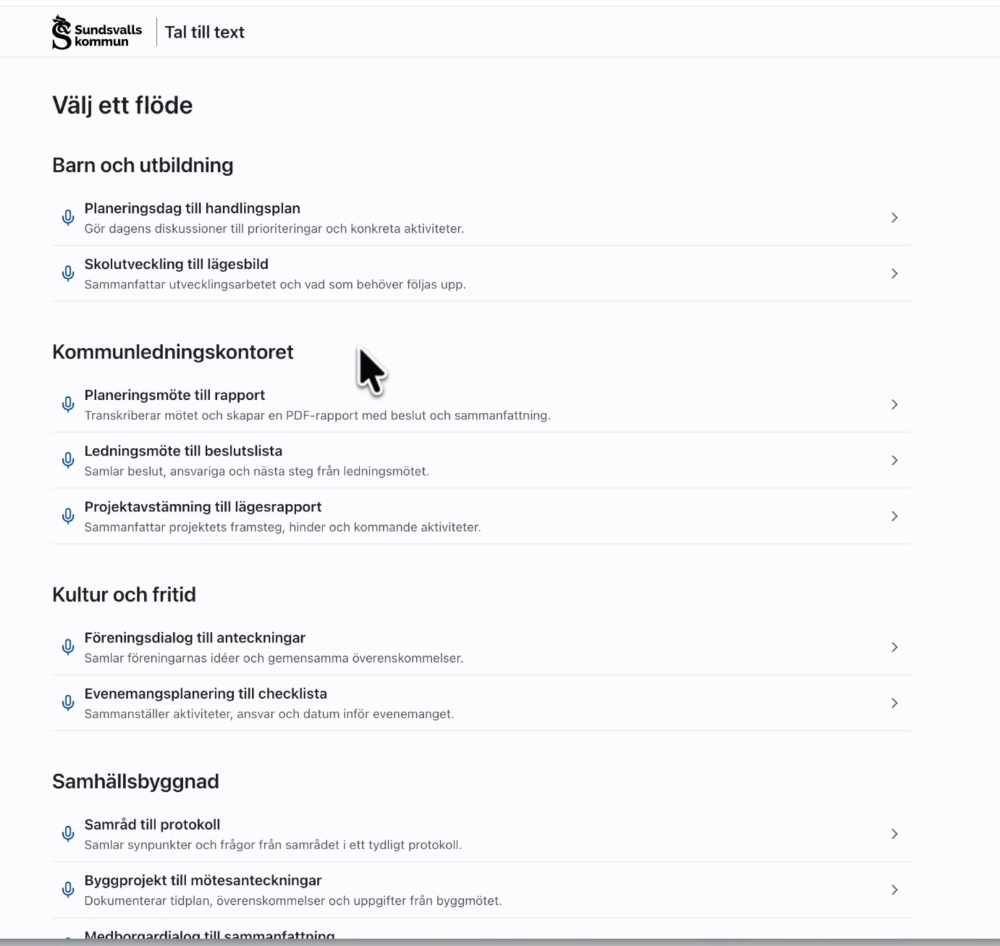
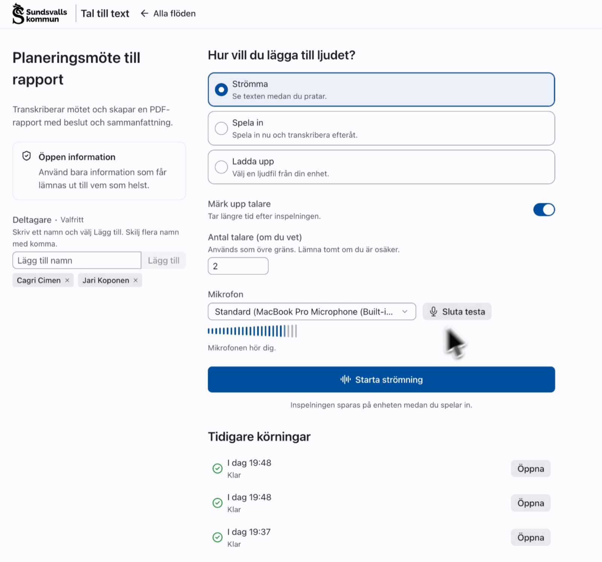
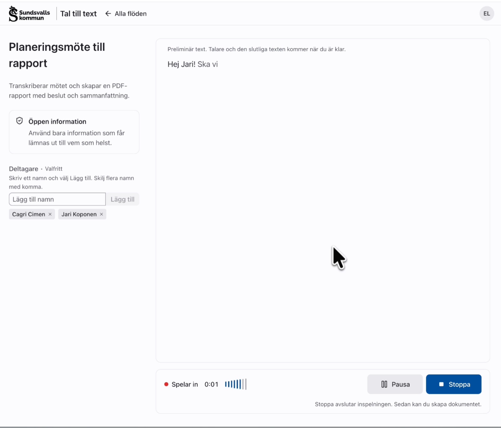
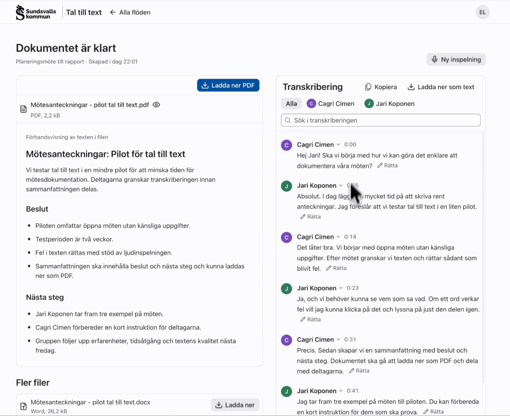
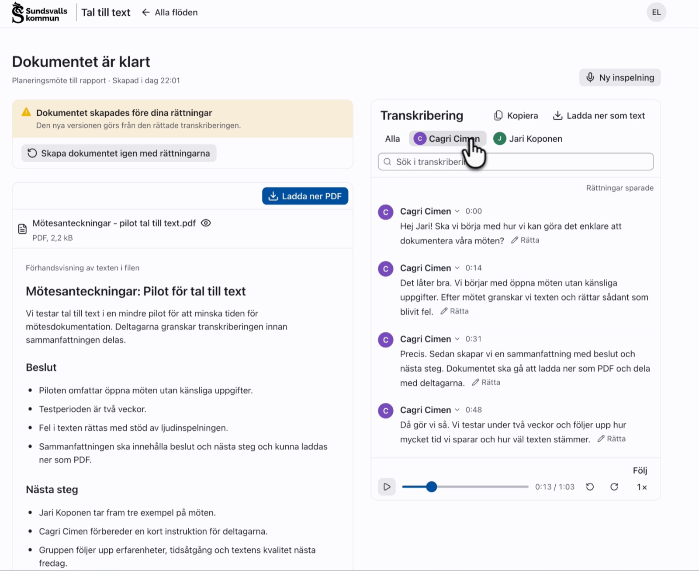

Tal till text gör ljud till transkribering och dokument
Tal till text tar emot ljud genom strömning, inspelning eller filuppladdning. Det valda flödet i Eneo bestämmer hur ljudet bearbetas och vad som skapas: en transkribering, och ett dokument när flödet är byggt för det. Modulen är en webbapp för mobiltelefon, surfplatta och dator.
Ljud in, resultat ut
-
Ljud in
Tre sätt
- Strömma och se texten under tiden
- Spela in och transkribera efteråt
- Ladda upp en ljudfil
-
Flödet i Eneo
Bearbetningen
- Transkribering
- Talaridentifiering och talarmappning
- Bearbetning med regelverk som underlag
- Dokument
-
Resultat ut
Det flödet är byggt för
- Transkribering med talare och tid
- PDF eller Word
Från ljud till resultat i ett valt flöde
Välj ett flöde
Ni väljer ett publicerat flöde som ni har tillgång till. Listan är ordnad efter yta, och varje flöde beskriver sitt resultat, till exempel "Transkriberar mötet och skapar en PDF-rapport med beslut och sammanfattning".

Lägg till ljudet
Ni kan strömma ljud och se texten under tiden, spela in och transkribera efteråt eller ladda upp en ljudfil. Deltagare anges i förväg, och mikrofonen kan testas innan inspelningen börjar.

Eneo kör flödet
Ljudet transkriberas med installationens transkriberingsmodell. Om talaridentifiering är ansluten märks replikerna med talare, och ett steg för talarmappning låter er koppla talarna till deltagare innan körningen fortsätter.

Resultatet
Om flödet skapar ett dokument förhandsvisas det och kan laddas ner som PDF eller Word. Transkriberingen visas replik för replik med talare och tid. Ni kan söka, filtrera per talare och kopiera texten. När ljudet spelas upp följer textvisningen uppspelningen. Ni kan rätta transkriberingen och skapa dokumentet igen med rättningarna.


Inspelning och användning på olika enheter
- Inspelningen sparas på enheten varannan sekund. Efter en omladdning, en krasch eller en utgången inloggning finns inspelningen kvar, utom som mest de senaste två sekunderna, och kan skickas eller fortsättas.
- Om mikrofonen försvinner, till exempel vid ett inkommande samtal, pausas inspelningen. Ni kan fortsätta i en ny del av samma inspelning.
- Uppladdning och start av körning görs om vid nätverksfel. Varje försök använder samma nyckel, så att Eneo skapar en körning per inspelning.
- Gränssnittet testas mot WCAG 2.2 AA vid skärmbredder från 320 till 3440 pixlar, i ljust och mörkt läge, med pekskärm, tangentbord och 200 procents zoom. Kontrollerna har en träffyta på minst 44 pixlar på pekskärm.
- Organisationens namn och logotyp anges i konfigurationen och visas i sidhuvudet.
Inloggning via Eneo och visning av säkerhetsklass
Användaren loggar in via Eneo, som överför inloggningen till modulen med en engångsbiljett. Modulens API-nyckel och användarens åtkomsttoken lagras på modulens server; webbläsaren har bara ett slumpmässigt sessions-id. Spärras användaren, nyckeln eller modulen i Eneo gäller det från nästa anrop. Modulen visar flödets säkerhetsklass med organisationens benämning, till exempel "Öppen information".
Talaridentifiering med Vemsa
Talaridentifieringen görs av Vemsa, en fristående tjänst med öppen källkod. Namnet kommer från frågan "vem sa?". Eneos transkriberingsmodell omvandlar ljud till text. Vemsa skiljer talarna åt och anger var i ljudet varje ord ligger, så att varje replik kan spelas upp. Talarna kopplas sedan till deltagare i flödets talarmappning. Tjänsten ansluts i Eneos administration under Modeller, Transkription, och varje yta ges tillgång till den.
Bakgrund: från transkribering till resultat
Projektet började med en idé om att transkribera samtal. Transkriberingen görs av den modell som väljs i Eneo, till exempel KB-Whisper. Nästa behov var att sammanställa transkriberingen, bearbeta den med regelverk och andra underlag och skapa en strukturerad rapport. Det gör ett flöde. Internt kallar vi arbetssättet tal till resultat.
Öppen källkod, hela vägen
Modulen, talaridentifieringen och Eneo finns på GitHub under AGPL-3.0.